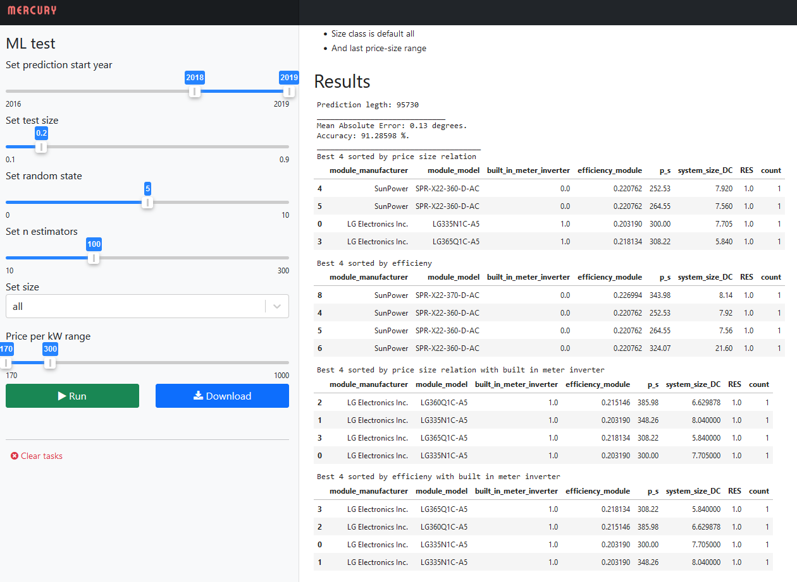
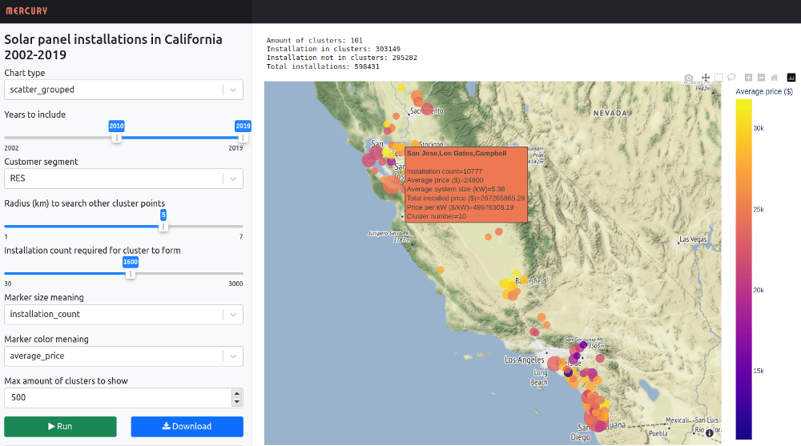

Mallit tuotantoon
Contents
Mallit tuotantoon#
Projektissa Tehtävä 6 oli varattu aikaa vain viikko, eikä ryhmässämme ollut paljoa kokemusta tuotantoon soveltamisesta. Tämä osuus jäikin siltä osin hyvin pintapuoliseksi. Varsinainen palvelimen speksaus, suunnittelu saati sitten toteutus jäi tältä osin tekemättä.
Käyttöliittymä Nobookille: Mercury#
Tutkimme kuitenkin hieman eri vaihtoehtoja toteuttaa Notebookeista eräänlainen tuotantoversio ja päädyimme vielä projektin loppuvaiheilla kokeilemaan tähän Mercurya.
Kysessä on avoimen lähdekoodin Python-kirjasto, joka mahdollistaa Jupyter Notebookien ajamisen selaimessa selkeänä web-sovelluksena. Sovelluksen käyttöliittymä luodaan määrittämällä YAML headerinä erilaisia interaktiivisia valikoita widgetien muodossa, joilla näytettävää dataa on helppo rajata.
Pienenä miinuspuolena Mercuryn YAML konfikuraatiossa on, että tämä ei anna mahdollisuutta hakea parametrejä datasta. Jos olisi halunnut hakea slidereille esimerkiksi minimi ja maksimi arvot käytettävästä datasta, niin se ei olisi onnistunut.
Lisäksi Mercuryssa on mahdollista piilottaa Notebookin koodit näkyvistä ja käyttäjä pystyy tallentamaan ajetun Notebookin tulokset HTML tai PDF-versiona.
Mercury pyörii Pythonin Djangon pohjalla ja tämä on mahdollista ajaa palvelimella esimerkiksi Dockerissa. Notebookit on mahdollista suorittaa myös ihan normaalien Notebookeina, joskaan Mercuryn valikot ja muut ominaisuudet eivät tällöin ole käytettävissä.
Perusversio on ilmainen ja julkaistu avoimena lähdekoodina GitHubissa. Kaupalliseen käyttöön vaaditaan maksullinen Pro-lisenssi, joka laajentaa samalla kirjaston toiminnallisuuksia.
Koodin ja datan optimointi#
Tuotantoversiossa merkittävä asia olisi suoritettavan koneoppimismallin lisäksi myös muu koodin optimointi, datan tallennusmuoto ja ylimääräisen datan karsiminen tuotantoversiosta.
Projektin koko datasta on kuitenkin järkevää luoda karsittu, esikäsitelty ja pakattu versio. Myöskään csv-tiedoston pakkaus ei merkittävästi vaikuttanut projektin datassa lukunopeuteen ja monessa tapauksessa pienempi tiedostokoko on hyvä asia.
CSV on datan tallennusmuotona myös melko hidas verrattuna moneen muuhun uudempaan tiedostomuotoon, mutta projektin miljoonan datarivin kohdalla käytännön erot ovat kuitenkin käytännössä vielä vain joitain sekunteja.
On kuitenkin olemassa muita huomattavasti nopeampia tiedostomuotoja, jotka on suunniteltu varta vasten isojen datamäärien käsittelyyn. Varsinaisessa tuotantoversiossa myös datan tallennusmuodon vaihtoa kannattaisi harkita.
Myös tuki usealle prosessorille olisi tärkeä ominaisuus saada tuotantoversiossa käyttöön. Oletuksena niin Pandas kuin useat koneoppimiskirjastotkaan eivät tätä ominaisuutta suoraan tue.
Testiversiot Mercurylla#
Loimme kahdesta projektissa toteutetusta mallista Mercury-versiot, jotka kuitenkin vaativat paikallisen asennuksen, koska varsinaista tuotantopalvelinta emme lähteneet näin lyhyessä ajassa edes yrittämään toteuttamaan.
Aurinkopaneelijärjestelmien luokittelu#
Linkki notebookiin: Mercury_RFC_SPC.ipynb
Käytetty menetelmä: Random Forest-luokittelija
Luokitellaan aurinkopaneliyksiköiden laatua hyötysuhteen mukaan
Mallin opetukseen käytetty: asennus hinta, koko ja malli
Tämän demo version mallille annetaan oppimateriaaliksi aurinkopanelin asennushinta, koko ja malli. Ennen sitä varsinainen luokittelu on tehty hyötysuihteen mukaan. Ajatus oli oikeastaan, että mahdollinen käyttäjä voisi saada koon mukaan haettua parhaat hintalaatusuhteeltaan olevat laiteet.
Malli ei ole vielä valmis ja vielä näin loppumetreillä tuli ideoita miten hinta-koko suhteen ja koon olisi voinut myös pisteyttää. Aikaa ei valitettavasti ole enää jatko kehitykseen, mutta ehkä joku vielä kiinnostuu siitä mahdollisesti myöhemmin. Tälläistä mallia olisi syytä jatkossa myös uudelleen kouluttaa, kun laitteet kehittyy. Ajatus oli, että mallia olisivat voineet hyödyntää niin jälleen myyjät kuin asiakkaat.
Tosin tiedän myös sen kaupan alalla työskennelleenä, että aina kuviot eivät mene tietenkään mallin mukaan. Julkiset hankinnat Suomessakin täytyy kilpailuttaa ja parhaimman tarjouksen saattaa lyödä pöytään valmistaja tai jälleenmyyjä laitteesta, joka muuten olisikin huonompi tai kalliimpi.

Aurinkopaneelijärjestelmien maantieteellinen klusterointi#
Linkki notebookiin: Mercury_clustering.ipynb
Käytetty menetelmä: DBSCAN-klusterointi
Klusteroidaan aurinkopaneeleiden asennuksia sijaintien ja määrien perusteella
Lyhyt yhteenveto Notebookin vasemman laidan käytössä olevista vaihtoehdoista:
Chart typekuvaajan tyyppiscatter_grouped: ryhmitelty klustereittain ja näkyvissä enemmän tietoa asennuksistascatter_separate_points: näyttää yksittäiset klusterien pisteet erillisinäanimated_heatmap: vuosittain animoitu kartta asennusten määristä
Years to include: sisällytettävät asennusvuodetCustomer segment: asiakassegmentti RES, NONRES, ALLRadius (km): säde, jolta klusterien pisteitä haetaanMin samples: asennusten määrä, jota klusterin luomiseen tarvitaanMarker size: Koon merkitys kuvaajassaMarker color: Värin merkitys kuvaajassaMax amount: mahdollisuus rajoittaa näytettävää klusterien määrää

Mercuryn asentaminen ja ajaminen paikallisesti#
conda install -c conda-forge mljar-mercury
mercury watch <notebookin_nimi>.ipynb
127.0.0.1:8000